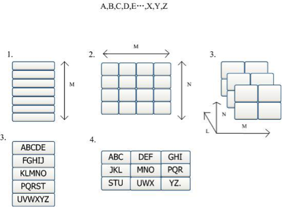
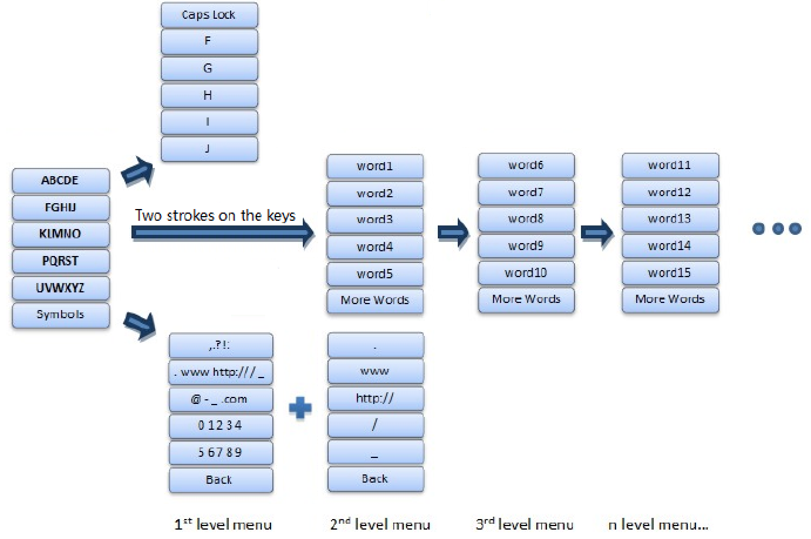
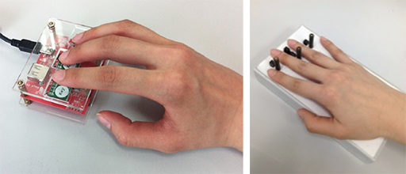
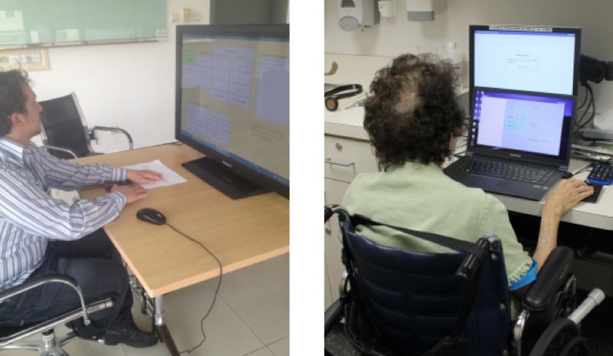

<!DOCTYPE html PUBLIC "-//W3C//DTD XHTML 1.0 Transitional//EN" "http://www.w3.org/TR/xhtml1/DTD/xhtml1-transitional.dtd">
<html xmlns="http://www.w3.org/1999/xhtml" lang="en-US">
    <head profile="http://gmpg.org/xfn/11">

        <title>Smile&#8230; There is a Moon  &raquo; One Bit Text Entry System</title>

        <meta name="viewport" content="width=device-width, initial-scale=1" />

        <meta http-equiv="Content-Type" content="text/html; charset=utf-8" />	
        <meta name="generator" content="WordPress 3.8.3" /> <!-- leave this for stats please -->

        <link rel="alternate" type="application/rss+xml" title="RSS 2.0" href="../../feed/index.html" />
        <link rel="alternate" type="text/xml" title="RSS .92" href="../../feed/rss/index.html" />
        <link rel="alternate" type="application/atom+xml" title="Atom 0.3" href="../../feed/atom/index.html" />
        <link rel="pingback" href="../../xmlrpc.php.html" />
        <link rel="icon" type="image/png" href="../../wp-content/uploads/2014/01/IxDF-HW1-2-copy-small1.png">
        <link rel="alternate" type="application/rss+xml" title="Smile... There is a Moon &raquo; Feed" href="../../feed/index.html" />
<link rel="alternate" type="application/rss+xml" title="Smile... There is a Moon &raquo; Comments Feed" href="../../comments/feed/index.html" />
<link rel="alternate" type="application/rss+xml" title="Smile... There is a Moon &raquo; One Bit Text Entry System Comments Feed" href="feed/index.html" />
<link rel='stylesheet' id='jetpack-subscriptions-css'  href='../../wp-content/plugins/jetpack/modules/subscriptions/subscriptions-ver=3.8.3.css' type='text/css' media='all' />
<link rel='stylesheet' id='jetpack-widgets-css'  href='../../wp-content/plugins/jetpack/modules/widgets/widgets-ver=20121003.css' type='text/css' media='all' />
<link rel='stylesheet' id='revoke-style-css'  href='../../wp-content/themes/Revoke/css/style.css' type='text/css' media='all' />
<link rel='stylesheet' id='revoke-bootstrap-css'  href='../../wp-content/themes/Revoke/css/bootstrap.min.css' type='text/css' media='all' />
<link rel='stylesheet' id='revoke-style-wp-css'  href='../../wp-content/themes/Revoke/style.css' type='text/css' media='all' />
<link rel='stylesheet' id='tesla-custom-font-css'  href='http://fonts.googleapis.com/css?family=Monsieur+La+Doulaise&ver=3.8.3' type='text/css' media='all' />
<script type='text/javascript'>
/* <![CDATA[ */
var tesla_ajax = {"url":"http:\/\/xiaoyuew.com\/wp-admin\/admin-ajax.php","nonce":"a6a2bbaf06"};
tesla_ajax.actions = {revoke_main:{},
revoke_clients:{},
revoke_secondary:{},
revoke_portfolio:{},
revoke_testimonial:{},
};
/* ]]> */
</script>
<script type='text/javascript' src='../../wp-includes/js/jquery/jquery.js?ver=1.10.2'></script>
<script type='text/javascript' src='../../wp-includes/js/jquery/jquery-migrate.min.js?ver=1.2.1'></script>
<script type='text/javascript' src='../../wp-content/themes/Revoke/tesla_framework/static/js/holder.js'></script>
<script type='text/javascript' src='../../wp-content/themes/Revoke/js/plugins.js'></script>
<script type='text/javascript'>
/* <![CDATA[ */
var revoke_main = {"ajaxurl":"http:\/\/xiaoyuew.com\/wp-admin\/admin-ajax.php","listviewmobile":"","listviewdesktop":""};
/* ]]> */
</script>
<script type='text/javascript' src='../../wp-content/themes/Revoke/js/script.js'></script>
<script type='text/javascript' src='../../wp-includes/js/comment-reply.min.js?ver=3.8.3'></script>
<link rel="EditURI" type="application/rsd+xml" title="RSD" href="../../xmlrpc-rsd.php.html" />
<link rel="wlwmanifest" type="application/wlwmanifest+xml" href="../../wp-includes/wlwmanifest.xml" /> 
<link rel='prev' title='Illustration' href='../../illustration/index.html' />
<link rel='next' title='Disney Imagination' href='../disney-imagination/index.html' />
<meta name="generator" content="WordPress 3.8.3" />
<link rel='canonical' href='index.html' />
<link rel='shortlink' href='http://wp.me/P48lH3-8T' />
<script type="text/javascript">var ajaxurl = 'http://xiaoyuew.com/wp-admin/admin-ajax.php';</script>
<!-- Jetpack Open Graph Tags -->
<meta property="og:type" content="article" />
<meta property="og:title" content="One Bit Text Entry System" />
<meta property="og:url" content="http://xiaoyuew.com/home-page/1-bit-input-method/" />
<meta property="og:description" content="This is my research project while I was workng in Tsinghua University, Beijing, China. Timeline: 13 months. May 2012 - Jun 2013 My roles: Programmer, UX researcher. My major contributions: Initial ..." />
<meta property="article:published_time" content="2013-12-31T16:55:43+00:00" />
<meta property="article:modified_time" content="2014-05-21T03:53:33+00:00" />
<meta property="article:author" content="http://xiaoyuew.com/author/lenniewxy/" />
<meta property="og:site_name" content="Smile... There is a Moon" />
<meta property="og:image" content="http://xiaoyuew.com/wp-content/uploads/2013/12/2devices-copy.png" />
<meta name="twitter:site" content="@jetpack" />
<meta name="twitter:image" content="http://xiaoyuew.com/wp-content/uploads/2013/12/framework.png?w=240" />
<meta name="twitter:card" content="summary" />
		<link rel="stylesheet" id="custom-css-css" type="text/css" href="../../index-custom-css=1&csblog=1&cscache=6&csrev=12.html" />
		<style type="text/css">.revoke_custom_background{background-image: url(../../wp-content/uploads/2014/04/colorful.png);background-position: top center;background-repeat: no-repeat;background-attachment: fixed;}    .textcolor{
        color: #37b1e5;
    }
    .textcolor_hover:hover{
        color: #37b1e5;
    }
    .bgcolor{
        background-color: #37b1e5;
    }
    .bgcolor_hover:hover{
        background-color: #37b1e5;
    }
    .bordercolor{
        border-color: #37b1e5;
    }
    .social a:hover img{
        background-color: #37b1e5;
    }
    .menuContainer>ul.menu>li.menuactive>a,
    .menuContainer>ul.menu>li>a:hover{
        background-color: #37b1e5;
    }
    .menuContainer div.menuLevel>ul.menuDrop>li:hover>a{
        background-color: #37b1e5;
    }
    .menuContainer div.menuLevel>ul.menuDrop>li>div.menuDropArrow{
        background-color: #37b1e5;
    }
    .titleContainer{
        border-bottom-color: #37b1e5;
    }
    .titleContainer .title{
        border-bottom-color: #37b1e5;
    }
    .titleContainer .clientsNav .clientsNavPrev{
        background-color: #37b1e5;
    }
    .titleContainer .clientsNav .clientsNavNext{
        background-color: #37b1e5;
    }
    .widgetFlickr .widgetFlickrImg:hover{
        border-color: #37b1e5;
    }
    .contact .contactForm fieldset.contactFormButtons input[type="submit"]:hover,
    .contactForm fieldset.contactFormButtons input[type="submit"]:hover,
    .contact .contactForm fieldset.contactFormButtons input[type="reset"]:hover,
    .contactForm fieldset.contactFormButtons input[type="reset"]:hover{
        background-color: #37b1e5;
    }
    .pageSlider ul.pageSliderNav li.active,
    .pageSlider ul.pageSliderNav li:hover{
        background-color: #37b1e5;
    }
    .widgetCategories ul li a span{
        background-color: #37b1e5;
    }
    .widgetCategories ul li a:hover{
        color: #37b1e5;
    }
    .widgetGallery .widgetGalleryImg a:hover img{
        border-color: #37b1e5;
    }
    .widgetWorks .widgetWorksEntry .widgetWorksEntryImg a span{
        background-color: #37b1e5;
    }
    .widgetWorks .widgetWorksEntry .widgetWorksEntryImg a:hover img{
        border-color: #37b1e5;
    }
    .works .worksFilter ul.worksFilterCategories li.worksFilterCategoriesActive div,
    .works .worksFilter ul.worksFilterCategories li:hover div{
        background-color: #37b1e5;
    }
    .works .worksViews .worksViewsOption.worksViewsOptionActive,
    .works .worksViews .worksViewsOption:hover{
        border-color: #37b1e5;
    }
    .works .worksContainer.worksContainerView1 .worksEntry .worksEntryContainer .worksEntryInfo .worksEntryInfoMore:hover{
        background-color: #37b1e5;
    }
    .works .worksContainer.worksContainerView2 .worksEntry .worksEntryContainer .worksEntryInfo .worksEntryInfoTitle a:hover{
        color: #37b1e5;
    }
    .blog .blogEntry .blogEntryTitle a:hover{
        color: #37b1e5;
    }
    .blog .blogEntry .blogEntryFooter .blogEntryFooterComments a{
        color: #37b1e5;
        border-color: #37b1e5;
    }
    .blogNav a.blogNavActive,
    .blogNav a:hover{
        color: #37b1e5;
    }
    .post .postForm .postFormButtons input:hover{
        background-color: #37b1e5;
    }
    .project .projectInfo .projectInfoDetails .projectInfoDetailsEntry .projectInfoDetailsEntryBody a{
        color: #37b1e5;
    }
    .footer .footerColumn .widget .widgetBody a:hover{
        color: #37b1e5;
    }
    .sidebar .widget_revoke_categories ul li a span{
        background-color: #37b1e5;
    }
    ul.page-numbers a:hover,
    ul.page-numbers span.current{
        color: #37b1e5;
    }
    #postForm p.form-submit #submit:hover{
        background-color: #37b1e5;
    }
    #reply-title a:hover{
        color: #37b1e5;
    }
    .sidebar .widget table tfoot tr td a:hover{
        color: #37b1e5;
    }
    .sidebar .widget table tbody tr td a:hover{
        background-color: #37b1e5;
    }
    .sidebar .widget .tagcloud a:hover,
    .sidebar .widget .textwidget a:hover{
        color: #37b1e5;
    }
    .sidebar .widget .widgetTitle a:hover{
        color: #37b1e5;
    }
    .sidebar .widget #searchform #searchsubmit:hover{
        background-color: #37b1e5;
    }
    .sidebar .widgetWorks .widgetWorksEntry .widgetWorksEntryImg a:hover{
        border-color: #37b1e5;
    }
    .searchNoResults form input#searchsubmit:hover{
        background-color: #37b1e5;
    }
    .footerColumn a:hover{
        color: #37b1e5;
    }
    .footerColumn .widget_search #searchsubmit:hover{
        background-color: #37b1e5;
    }
    .menuContainer > ul.menu > li.current_page_item > a,
    .menuContainer > ul.menu > li.current-menu-item > a{
        background-color: #37b1e5;
    }
    .post-numbers{
        color: #37b1e5;
    }
    .post-numbers a:hover,
    .postFooter a:hover,
    .pingback a:hover,
    .postCommentsEntryBodyMessage a:hover,
    .post .postBody a:hover,
    .pageContents a:hover,
    .postCommentsEntryBodyUser a:hover,
    .trackback a:hover{
        color: #37b1e5;
    }
    .pageContents input[type="submit"]:hover,
    .pageContents input[type="reset"]:hover{
        background-color: #37b1e5;
    }
    .sidebar .widget ul li a:hover, .sidebar .widget_revoke_categories ul li a:hover{
        color: #37b1e5;
    }
    
    </style>
    </head>
    <body class="page page-id-551 page-child parent-pageid-22 page-template-default font3 revoke_custom_background">

        <div class="borderline1"></div>
        <div class="borderline2"></div>
        <div class="wrapper">
            <div class="header"><!-- HEADER START -->
                <div class="logo" style="margin-top:0;"><a href="../../index.html"><span style="line-height:43px;font-family:Monsieur La Doulaise;color:#44454c;font-size:47px;">Xiaoyue Wang</span></a></div>                                <div class="social">
                                                                                                                        <a href="http://www.linkedin.com/in/lenniewxy/" target="_blank">
                        
                    </a>
                                                                                                                        <a href="http://www.flickr.com/photos/86965015@N04/sets/72157638561501566/" target="_blank">
                        
                    </a>
                                                        </div>
                                <div class="menuContainer">
                    <ul class="menu font1"><li class="page_item page-item-22 current_page_ancestor current_page_parent"><a href="../../index.html">portfolio</a>
<div class="menuLevel"><ul class='children menuDrop font3'>
	<li class="page_item page-item-1074"><div class="menuDropArrow"></div><a href="../creating-concept-storyboards/index.html">Creating Concept Storyboards</a></li>
	<li class="page_item page-item-1132"><div class="menuDropArrow"></div><a href="../designing-for-cmu-summit/index.html">Designing for CMU Summit</a></li>
	<li class="page_item page-item-680"><div class="menuDropArrow"></div><a href="../designing-tools-for-ta-office-hour/index.html">Designing tools for TA office hour</a></li>
	<li class="page_item page-item-624"><div class="menuDropArrow"></div><a href="../disney-imagination/index.html">Disney Imagination</a></li>
	<li class="page_item page-item-965"><div class="menuDropArrow"></div><a href="../healthcareit/index.html">Healthcare IT program &#8211; Pill Reminder</a></li>
	<li class="page_item page-item-974"><div class="menuDropArrow"></div><a href="../impaqd/index.html">IMPAQD</a></li>
	<li class="page_item page-item-774"><div class="menuDropArrow"></div><a href="../mobile-collaboration-in-the-workplace/index.html">Mobile collaboration in the workplace</a></li>
	<li class="page_item page-item-551 current_page_item"><div class="menuDropArrow"></div><a href="index.html">One Bit Text Entry System</a></li>
	<li class="page_item page-item-674"><div class="menuDropArrow"></div><a href="../flex/index.html">Redesigning a vending machine</a></li>
	<li class="page_item page-item-1291"><div class="menuDropArrow"></div><a href="../relive-never-miss-an-exciting-moment-of-a-game-again/index.html">ReLive &#8211; Never miss an exciting moment of a game again</a></li>
	<li class="page_item page-item-955"><div class="menuDropArrow"></div><a href="../talkee-mobile-app-design/index.html">TalKee &#8211; Mobile app design</a></li>
	<li class="page_item page-item-879"><div class="menuDropArrow"></div><a href="../ipad-emag/index.html">Travel Getaway &#8211; iPad Magazine</a></li>
	<li class="page_item page-item-703"><div class="menuDropArrow"></div><a href="../communication-design/index.html">Communication Design</a></li>
</ul></div>
</li>
<li class="page_item page-item-498"><a href="../../illustration/index.html">Illustration</a></li>
<li class="page_item page-item-493"><a href="../../communication/index.html">Communication Design</a></li>
<li class="page_item page-item-23"><a href="../../contact-page/index.html">about me</a></li>
</ul><select><option> -- Select A Page -- </option>	<option class="level-0" value="http://xiaoyuew.com/">portfolio	<option class="level-1" value="http://xiaoyuew.com/home-page/creating-concept-storyboards/">&nbsp;&nbsp;&nbsp;Creating Concept Storyboards</option>
	<option class="level-1" value="http://xiaoyuew.com/home-page/designing-for-cmu-summit/">&nbsp;&nbsp;&nbsp;Designing for CMU Summit</option>
	<option class="level-1" value="http://xiaoyuew.com/home-page/designing-tools-for-ta-office-hour/">&nbsp;&nbsp;&nbsp;Designing tools for TA office hour</option>
	<option class="level-1" value="http://xiaoyuew.com/home-page/disney-imagination/">&nbsp;&nbsp;&nbsp;Disney Imagination</option>
	<option class="level-1" value="http://xiaoyuew.com/home-page/healthcareit/">&nbsp;&nbsp;&nbsp;Healthcare IT program - Pill Reminder</option>
	<option class="level-1" value="http://xiaoyuew.com/home-page/impaqd/">&nbsp;&nbsp;&nbsp;IMPAQD</option>
	<option class="level-1" value="http://xiaoyuew.com/home-page/mobile-collaboration-in-the-workplace/">&nbsp;&nbsp;&nbsp;Mobile collaboration in the workplace</option>
	<option class="level-1" value="http://xiaoyuew.com/home-page/1-bit-input-method/">&nbsp;&nbsp;&nbsp;One Bit Text Entry System</option>
	<option class="level-1" value="http://xiaoyuew.com/home-page/flex/">&nbsp;&nbsp;&nbsp;Redesigning a vending machine</option>
	<option class="level-1" value="http://xiaoyuew.com/home-page/relive-never-miss-an-exciting-moment-of-a-game-again/">&nbsp;&nbsp;&nbsp;ReLive - Never miss an exciting moment of a game again</option>
	<option class="level-1" value="http://xiaoyuew.com/home-page/talkee-mobile-app-design/">&nbsp;&nbsp;&nbsp;TalKee - Mobile app design</option>
	<option class="level-1" value="http://xiaoyuew.com/home-page/ipad-emag/">&nbsp;&nbsp;&nbsp;Travel Getaway - iPad Magazine</option>
	<option class="level-1" value="http://xiaoyuew.com/home-page/communication-design/">&nbsp;&nbsp;&nbsp;Communication Design</option>
</option>
	<option class="level-0" value="http://xiaoyuew.com/illustration/">Illustration</option>
	<option class="level-0" value="http://xiaoyuew.com/communication/">Communication Design</option>
	<option class="level-0" value="http://xiaoyuew.com/contact-page/">about me</option>
</select>                </div>
            </div><!-- HEADER END -->
        </div>
        <div id="contents"><!-- CONTENTS START -->
            <div class="wrapper">


	<div class="titleContainer font1 titlePage titleBordered">
	    <div class="title">
	        One Bit Text Entry System	    </div>
	</div>

<div class="page">
	<div class="pageContents">
				<p><em>This is my research project while I was workng in Tsinghua University, Beijing, China.</em></p>
<p><span style="color: #ff961e;"><strong>Timeline:</strong></span> 13 months. May 2012 &#8211; Jun 2013</p>
<p><span style="color: #ff961e;"><strong>My roles:</strong></span> Programmer, UX researcher.</p>
<p><span style="color: #ff961e;"><strong>My major contributions:</strong></span> Initial calculation of typing efficiency; Programmed using C# with MS Visual Studio; UX research.</p>
<p>&nbsp;</p>
<p><strong>About</strong></p>
<p>Except for the prevalent data interaction, new methods like voice interaction and behavior interaction, all have specific requirements for users, e.g., being able to talk for speech recognition and move for gesture recognition. Such expensive equipments with complicated mechanisms are not practical for disabled people, who have massive need but are hardly met. Thus, we worked on the design and development of a One-Bit input method, not only to make their communication easier, but to improve accuracy and save costs at the same time. We proposed an interface with a highlight going through each key, and the user simply types in and selects words from a wordlist.</p>
<p><strong>Framework of SAK (Scanning Ambiguous Keyboard) design</strong></p>
<p>To balance the three essential elements, we proposed a unified framework for one bit based SAK design.</p>
<p></p>
<p>The scanning of 26 English characters in a SAK can be categorized into three classes: one-dimensional, two-dimensional and three-dimensional scanning keyboard (1D-SAK, 2D-SAK, and 3D-SAK), as shown below. 1D-SAK puts all the M keys in a column, and the highlight moves one-by-one from up to down over the keys. This keyboard can also be designed as a rolling wheel with a visible window. The keys move through the visible window one-by-one when the keyboard wheel rolls.<br />
2D-SAK organizes the keys into an MN array. The scanning of the keys is first row-by-row then column-by-column or vise versa. The M N array of keys can be further sorted into a multi-layered array, which is a three-dimensional scanning keyboard (3D-SAK). Its dimension is MNL. A key selection should have three times of key-press in this case.</p>
<p><strong>Navigation Map of 1D-SAK</strong></p>
<p>For practical use, obviously there is much more to consider systematically in the SAK framework. We need to type words, letters and symbols (including punctuation) in real world application. Apart from that, function keys should be considered as well, e.g., delete, go back, look for more words, etc. Based on the reference design of 1D-SAK, we developed a full text entry system by integrating words, letters, symbols, and functions all together into the high efficiency, easy learning 1D-SAK framework. As seen in the implementation schema (see figure in below), the interface consists of two parts: 1) capital letters in alphabetic orders on the left of arrows, 2) letters, words, and punctuation displayed on the right of the arrows. The left part is stable while the right part changes according to user’s indication. When a key of 1D-SAK (figure, left) is clicked, the system extends all the letters on that key into six separate keys (The up row in the figure). In a nut shell, letters input has one level menu, words input can have multi-level menu depending on words frequency, and symbols input has two level menus.<br />
</p>
<p><strong>Prototyping and Coding</strong></p>
<div class="embed-vimeo" style="text-align:center;"><iframe src="http://www.youtube.com/embed/Wc1cUlspjw8?rel=0" width="700" height="393" frameborder="0" webkitallowfullscreen mozallowfullscreen allowfullscreen></iframe></div>
<p>Highlighting goes through each key alternatively, and the foreground color of a key is changed when it is clicked.<br />
At the start of the program, without indicating specific input, the right column shows the top five frequent words from a 400,000 English corpus. The first time a key of letters from the left column is clicked, letters are expanded on the right column with a “CapsLock” key on the top of the column. Words appear when one of the letter keys on the left column is clicked for the second time. Words can be chosen as highlighting goes to the right column.<br />
There is also an area named “More-Words Window” on the right, which shows the words placed in following “More-Words” columns. Below the “More Words Window”, the window named What you have typed records the keys users clicked in the input of a word. This clicking-history eases the process in inputting long and complicated words.</p>
<p><strong>One-Bit Input Devices</strong></p>
<p>In real world, users have different physical impairments and need special devices for interaction. We have developed prototypes of input devices shown below.</p>
<p></p>
<p>On the left we show a capacity input device which enables three fingers to place on it. As long as one finger can be raised and brought down, it can activate and deliver an input. On the right shows a similar device based on detecting the movement of fingers. The hidden infrared sensors between each two stakes capture any movement of a finger for an input. The program itself has to provide a user friendly and easy-to-control interface independent from input hardware. For this reason, our program is designed for various input hardware, for instance, a brain computer interaction headset.</p>
<p><strong>User Studies</strong></p>
<p>The participants of the test consisted of people diagnosed with and without parkinson disease. A quick pretest with 3 participants for the 1D-SAK with non diseased people showed that the interface was more difficult to operate with for people whose first language is not based on the Latin alphabet. To avoid potential language mistakes, English native speaking students were used as test persons. The programs were tested with non parkinson diseased people first to gather shallow usability problems and critical incidents before identifying the ones more specific to the target group. During the experiments, we were using the Thinking Aloud-Method to record participants’ thoughts.<br />
We made usability report for each subject. Based on their feed back, the program in general has high learnability and good satisfaction. Although as healthy people, they sometimes find it slow, but they all believe this could be very beneficial for disabled people and they love this new way of typing. In a nut shell, users are impressed by the idea and find it interesting interacting with only one finger.<br />
The 1D-SAK system was further tested with parkinson patients in the hospital of University of South Florida (USF). The patients were trained within three to five minutes via demonstrations, and then asked to text in a sentence they were thinking with one key input device. In the test, one of them input a name of rare wine which made him proud of it. The patients were especially satisfied with the send mail or SMS option.<br />
These studies proved that the system is helpful for disabled or diseased users, and very easy to learn. The simple structure enables a high learnability curve and a fast interaction with the program. It is not only a tool for allowing handicapped people to text quicker, but also for integrating them in the lives of their friends and family.</p>
<p><br />
<span style="color: #ff961e;"><strong>Co-workers:</strong></span></p>
<p><strong></strong>Markus Huber (University of Siegen, Germany), Shan Li (Georgia Institute of Technology), Xuan Zhu (University of Michigan)</p>
<p>The research was led by Professor <a href="http://www.tsinghua.edu.cn/publish/csen/4623/2010/20101224172944081935675/20101224172944081935675_.html" target="_blank" style="color: rgb(55,177,229); text-decoration: none;">Linmi Tao</a>. </p>
	</div>
    
<div class="postComments">

    
</div>

								<div id="respond" class="comment-respond">
				<h3 id="reply-title" class="comment-reply-title">LEAVE A COMMENT <small><a rel="nofollow" id="cancel-comment-reply-link" href="index.html#respond" style="display:none;">CANCEL REPLY</a></small></h3>
									<form action="http://xiaoyuew.com/wp-comments-post.php" method="post" id="postForm" class="comment-form">
																			<fieldset>							<input placeholder="Name *" id="author" name="author" type="text" value="" size="30" aria-required='true' />
<input placeholder="E-mail *" id="email" name="email" type="text" value="" size="30" aria-required='true' />
												<div class="commentWrapper"><div class="commentContainer"><textarea placeholder="Type your message here" id="comment" name="comment" cols="" rows="" aria-required="true"></textarea></div></div></fieldset>												<p class="form-submit">
							<input name="submit" type="submit" id="submit" value="Reply" />
							<input type='hidden' name='comment_post_ID' value='551' id='comment_post_ID' />
<input type='hidden' name='comment_parent' id='comment_parent' value='0' />
						</p>
						<p class="comment-subscription-form"><input type="checkbox" name="subscribe_comments" id="subscribe_comments" value="subscribe" style="width: auto; -moz-appearance: checkbox; -webkit-appearance: checkbox;" /> <label class="subscribe-label" id="subscribe-label" for="subscribe_comments">Notify me of follow-up comments by email.</label></p><p class="comment-subscription-form"><input type="checkbox" name="subscribe_blog" id="subscribe_blog" value="subscribe" style="width: auto; -moz-appearance: checkbox; -webkit-appearance: checkbox;" /> <label class="subscribe-label" id="subscribe-blog-label" for="subscribe_blog">Notify me of new posts by email.</label></p>					</form>
							</div><!-- #respond -->
			</div>


            </div>
        </div><!-- CONTENTS END -->
        
                
        <div class="lowerfooterbg">
            <div class="wrapper">
                <div class="lowerfooter">
                    <div class="copyright textcolor10">
                        &copy; copyright 2014 powered by <span class="textcolor">
                                                Xiaoyue Wang                                            </span>
                    </div>
                    <div class="signature textcolor10">
                        <span class="textcolor9">Smile... There is a Moon</span> by <span class="textcolor">
                                                Xiaoyue Wang                                            </span>
                    </div>
                </div>
            </div>
        </div>

        	<div style="display:none">
	</div>
<script type='text/javascript' src='http://s0.wp.com/wp-content/js/devicepx-jetpack.js?ver=201422'></script>
<script type='text/javascript' src='http://s.gravatar.com/js/gprofiles.js?ver=2014Mayaa'></script>
<script type='text/javascript'>
/* <![CDATA[ */
var WPGroHo = {"my_hash":""};
/* ]]> */
</script>
<script type='text/javascript' src='../../wp-content/plugins/jetpack/modules/wpgroho.js?ver=3.8.3'></script>
<script type='text/javascript' src='https://maps.googleapis.com/maps/api/js?v=3.exp&sensor=false&libraries=places&ver=3.8.3'></script>
<script type='text/javascript' src='../../wp-content/themes/Revoke/tesla_framework/static/js/subscription.js?ver=3.8.3'></script>

	<script src="http://stats.wordpress.com/e-201422.js" type="text/javascript"></script>
	<script type="text/javascript">
	st_go({v:'ext',j:'1:2.9.3',blog:'61095361',post:'551',tz:'0'});
	var load_cmc = function(){linktracker_init(61095361,551,2);};
	if ( typeof addLoadEvent != 'undefined' ) addLoadEvent(load_cmc);
	else load_cmc();
	</script><script>
  (function(i,s,o,g,r,a,m){i['GoogleAnalyticsObject']=r;i[r]=i[r]||function(){
  (i[r].q=i[r].q||[]).push(arguments)},i[r].l=1*new Date();a=s.createElement(o),
  m=s.getElementsByTagName(o)[0];a.async=1;a.src=g;m.parentNode.insertBefore(a,m)
  })(window,document,'script','//www.google-analytics.com/analytics.js','ga');

  ga('create', 'UA-44938135-1', 'xiaoyuew.com');
  ga('send', 'pageview');

</script>        
    </body>
</html>

<!-- Performance optimized by W3 Total Cache. Learn more: http://www.w3-edge.com/wordpress-plugins/

Page Caching using disk: enhanced

 Served from: xiaoyuew.com @ 2014-05-26 20:35:37 by W3 Total Cache -->
<!-- Localized -->